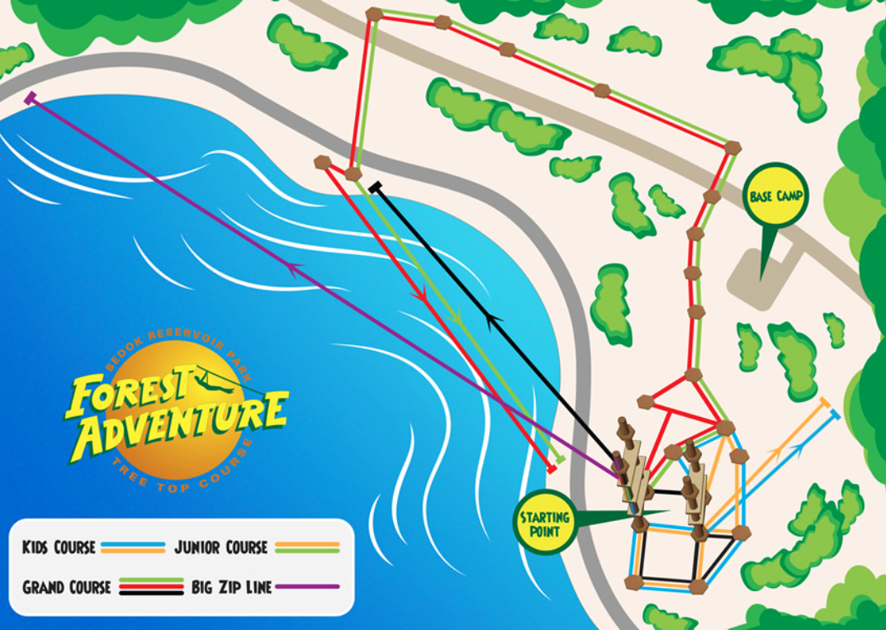

Immerse yourself in fun, adrenaline-pumping action at Singapore’s one and only treetop obstacle course, Forest Adventure. Feel the freedom and thrill as you fly across Bedok Reservoir on our 300m zipline. We promise you an unforgettable outdoor adventure packed with laughter, excitement and personal achievements. You are just one click away to an unforgettable outdoor adventure experience!
Grand Course
Junior Course
Kids Course
The Big Zip
Monday 9.30am-2pm
Tuesday, Wednesday to Friday 9.30am-6pm
Saturday and Sunday 9.30am-6.30pm
Phone: 8100 7420
Email: booking@forestadventure.com.sg
By Train: Nearest MRT: Bedok Reservoir (DT30)
By Bus: 5, 18, 21, 22, 28, 46, 59, 65, 67, 69, 168. Alight bus stop no 75349 “the Clearwater condo” if you are coming from Tampines Avenue 1 or bus stop no 75341 “opposite Clearwater condo” if you are coming from Bedok North Road.
By Car: If you are driving take the PIE Changi, Exit 6 Bedok North Avenue 3. Turn left on Bedok North Ave 3 and turn right at the traffic light on Bedok Reservoir Road. Drive 70m and turn left into the carpark. You will see signs to Forest Adventure. If you are using your GPS, Google Maps or Maps, just enter “Forest Adventure“, the nearest carpark to park at is Carpark A.
Details on the Forest Adventure